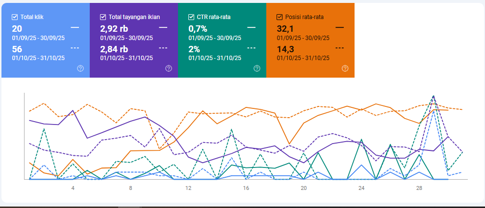
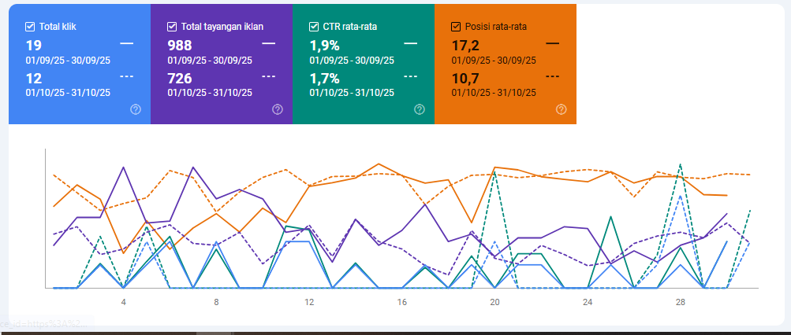

Diupdate: 2025-09-15 — Sumber data: Google Search Console (data yang dikirim oleh user).
Sumber: Google Search Console
Ahlifumigasi.com — Ringkasan Performa
Periode pembanding: Juli 2025 → Agustus 2025
Tabel Perbandingan Metrik Ahlifumigasi (Juli vs Agustus 2025)
Metrik
Juli 2025
Agustus 2025
Perubahan Absolut
Perubahan %
Tren
Total Klik
93
70
-23
-24.7%
↘ Turun
Total Tayangan
7,170
5,160
-2,010
-28.0%
↘ Turun
CTR Rata-rata
1.30%
1.37%
+0.07 pp
+5.4%
↗ Naik
Posisi Rata-rata
19.1
23.4
+4.3 posisi
+22.5% (memburuk)
↘ Memburuk
Analisis Mendalam — Ahlifumigasi.com
1) Executive summary
Volume impresi & klik turun tajam (Tayangan -28.0%, Klik -24.7%) sementara CTR sedikit naik. Ini menunjukkan bahwa halaman yang masih tampil relatif relevan, tetapi banyak kueri/halaman kehilangan visibilitas.
Posisi rata-rata memburuk ~4.3 posisi — indikasi utama penurunan visibilitas organik pada kueri bernilai tinggi.
2) Penyebab potensial (hipotesis)
Perubahan ranking pada kueri bernilai tinggi: beberapa halaman yang sebelumnya memberi impresi besar kemungkinan turun peringkat.
Perubahan SERP / fitur baru: munculnya Featured Snippet, People Also Ask, atau hasil lokal yang menggantikan impresi sebelumnya.
Masalah teknis / indexability: halaman penting ter-block oleh robots/meta-noindex, sitemap tidak lengkap, atau error 4xx/5xx.
Konten kadaluarsa / relevansi menurun: konten perlu update (tanggal, data, referensi) sehingga CTR naik tetapi impresi turun karena kata kunci relevan kehilangan peringkat.
Kompetitor: pesaing memperkuat konten atau backlinks sehingga mendorong turun peringkat.
3) Tindakan prioritas (CHECKLIST — lakukan verifikasi & perbaikan)
Di Google Search Console (GSC):
Performance → Compare (Juli vs Agustus). Urutkan berdasarkan Impressions dan export CSV.
Identifikasi top 20 kueri & halaman yang kehilangan impresi terbesar; catat % perubahan dan posisi rata-rata.
URL Inspection pada 3–5 halaman kehilangan paling banyak impresi: cek coverage, canonical, last indexed, mobile issues.
Coverage & Manual Actions → pastikan tidak ada penalti, dan tidak ada peningkatan error 5xx / soft-404.
Teknis & server:
Periksa server logs untuk response 4xx/5xx, crawl errors, atau penurunan crawl rate.
Pastikan sitemap.xml terbaru & submit ulang bila perlu; cek robots.txt untuk block tak sengaja.
Audit Core Web Vitals (Chrome UX Report / PageSpeed) untuk halaman prioritas.
On-page & snippet:
Perbarui title & meta description untuk 10 halaman dengan impresi tinggi tapi CTR stagnan/menurun.
Tambahkan schema (FAQ, article, breadcrumb) pada halaman yang relevan untuk meningkatkan CTR di SERP.
Konten & kompetisi:
Audit konten yang turun peringkat: perbarui data, tambahkan sumber, perkuat internal linking ke halaman tersebut.
Analisa competitor: halaman mana yang menggantikan posisimu? ambil insight struktur & word count.
4) Filter & query yang disarankan di GSC
Performance → Compare: Date range Juli vs Agustus → Filter: Pages (descending Impressions) → Export.
Tambahkan filter: Query contains [kata kunci kategori penting] untuk melihat perubahan impresi per topik.
5) KPI yang harus dimonitor setelah perbaikan
Impressions & clicks per page (weekly snapshots).
Average position per affected query.
Index coverage (valid pages) dan jumlah pages with errors.
Server errors (5xx) dan Core Web Vitals untuk halaman prioritas.
Sumber: Google Search Console
Sensorgempa.com — Ringkasan Performa
Periode pembanding: Juli 2025 → Agustus 2025
Tabel Perbandingan Metrik Sensorgempa (Juli vs Agustus 2025)
Metrik
Juli 2025
Agustus 2025
Perubahan Absolut
Perubahan %
Tren
Total Klik
222
430
+208
+93.7%
↗ Naik
Total Tayangan
22,700
37,553
+14,853
+65.4%
↗ Naik
CTR Rata-rata
1.00%
1.03%
+0.03 pp
+3.0%
↗ Naik
Posisi Rata-rata
12.7
12.2
-0.5 posisi
-3.9% (membaik)
↗ Membaik
Analisis Mendalam — Sensorgempa.com
1) Executive summary
Sensorgempa menunjukkan lonjakan impresi & klik yang besar (Impr +65.4%, Klik +93.7%) dengan sedikit perbaikan posisi rata-rata. Ini adalah sinyal peningkatan visibilitas yang sehat.
CTR relatif stabil/naik tipis, menandakan snippet masih bekerja untuk menarik klik.
2) Penyebab potensial (hipotesis)
Peristiwa topikal/berita: Sensorgempa dapat memperoleh traffic karena peristiwa (gempa) yang meningkatkan pencarian; spike organic bersifat real-time dan episodik.
Perbaikan teknis atau optimasi konten: indexasi atau update konten yang meningkatkan kepantasan untuk query tertentu.
Pergeseran SERP: SERP mungkin menampilkan lebih banyak hasil yang menguntungkan (mis. news box) yang mengarahkan lebih banyak klik ke situs yang memberikan informasi cepat.
3) Tindakan prioritas (CHECKLIST — manfaatkan momentum)
Identifikasi halaman & query pendorong: di GSC export top pages & queries yang menyumbang mayoritas kenaikan. Tandai halaman yang mendapat kenaikan impresi terbesar.
Skalakan konten yang berkinerja baik: perbanyak varian artikel/popular post, tambahkan internal link ke halaman prioritas, dan buat landing page ringkasan jika beberapa artikel terkait mendapat traffic.
Infrastruktur & caching: pastikan server & CDN siap untuk traffic (cek hit rate cache, timeouts, load balancer).
Monetisasi & tracking: pasang event tracking (Analytics/GA4) untuk konversi/engagement pada halaman puncak sehingga kamu dapat mengukur nilai traffic baru tersebut.
4) Opportunity checklist
Tambahkan schema khusus (event / live update / article) agar hasil richer di SERP.
Analisa competitor yang juga naik — lihat apakah mereka mendapatkan Featured Snippets yang bisa kamu rebut dengan format konten yang sesuai.
Review CTR per query: jika CTR rendah di query bervolume besar, optimasi title/description untuk menaikkan CTR lebih lanjut.
5) KPI & monitoring
Monitor top pages by impressions & clicks (export weekly) — segera rekap pages yang memberi >60% dari kenaikan total.
Monitor server metrics (uptime, median response time) saat ada lonjakan trafik.
Sumber: Google Search Console
Tanogaido.com — Ringkasan Performa
Periode pembanding: Juli 2025 → Agustus 2025
Tabel Perbandingan Metrik Tanogaido (Juli vs Agustus 2025)
Metrik
Juli 2025
Agustus 2025
Perubahan Absolut
Perubahan %
Tren
Total Klik
1,980
1,725
-255
-12.9%
↘ Turun
Total Tayangan
282,000
225,832
-56,168
-19.9%
↘ Turun
CTR Rata-rata
0.70%
0.75%
+0.05 pp
+7.1%
↗ Naik
Posisi Rata-rata
17.7
19.7
+2.0 posisi
+11.3% (memburuk)
↘ Memburuk
Analisis Mendalam — Tanogaido.com
1) Executive summary
Tanogaido mengalami penurunan impresi & klik (Impr -19.9%, Klik -12.9%) meski CTR sedikit naik. Ini menunjukkan turunnya visibilitas keseluruhan tetapi kualitas snippet untuk yang masih tampil sedikit lebih baik.
Posisi rata-rata melemah ~2 posisi — sumber utama penurunan traffic.
2) Penyebab potensial (hipotesis)
Penurunan posisi pada kueri ber-volume besar — cek kueri & halaman yang menyumbang impresi mayoritas.
Konten mungkin mengalami content decay (perlu update), atau pesaing melakukan optimasi (konten lebih segar / backlink).
Mungkin ada perubahan teknis (canonical, hreflang, duplicate content) yang menyebabkan impresi terdistribusi ke URL lain.
3) Tindakan prioritas (CHECKLIST)
GSC → Performance: compare Juli vs Agustus → export pages/queries; fokus pada top 50 pages that lost impressions.
On-page improvements: perbarui artikel yang kehilangan peringkat: tambahkan nilai baru (data, video, update), optimasi headings, tambahkan internal links ke halaman penting.
Technical checks: URL inspection pada halaman decline, cek canonical, mobile usability, structured data errors.
Competitive analysis & content gap: identifikasi konten kompetitor yang menggantikan posisi; tiru struktur & perkuat dengan data lokal/unik.
4) A/B snippet testing
Coba variasi title/meta untuk 5 page dengan impressions tinggi tapi posisi menurun; ukur CTR dan klik di GSC setelah perubahan.
5) KPI & monitoring
Weekly snapshot: impressions & clicks per page; position change; pages with new errors in Coverage & Mobile Usability.

Sumber: Google Search Console
Herbmedicineindonesia.com — Ringkasan Performa
Periode: Juli 2025 → Agustus 2025
Tabel Perbandingan Metrik Herbmedicineindonesia (Juli vs Agustus 2025)
Metrik
Juli 2025
Agustus 2025
Perubahan Absolut
Perubahan %
Tren
Total Klik
14
17
+3
+21.4%
↗ Naik
Total Tayangan
3,212
3,835
+623
+19.4%
↗ Naik
CTR Rata-rata
0.50%
0.48%
-0.02 pp
-4.9%
↘ Turun
Posisi Rata-rata
55.3
59.0
+3.7 posisi
+6.7% (memburuk)
↘ Memburuk
Analisis Mendalam — Herbmedicineindonesia.com
1) Executive summary
Impresi & klik naik, tetapi posisi rata-rata memburuk sehingga ranking masih rendah (di luar halaman 1).
CTR turun tipis → snippet kurang menarik meskipun ada peningkatan impresi.
2) Penyebab potensial (hipotesis)
Konten muncul di lebih banyak kueri baru, tetapi peringkatnya masih rendah.
Title/meta kurang menarik sehingga CTR stagnan.
Kurangnya backlink & internal link menyebabkan ranking sulit naik.
3) Tindakan prioritas (CHECKLIST)
Optimasi snippet: perbarui title & meta description agar lebih menarik (gunakan angka, klaim kuat, CTA singkat).
Konten: fokus perkuat halaman yang sudah naik impresi, tambahkan konten pendukung (FAQ, artikel detail).
Link building: tambahkan internal link ke halaman target & mulai campaign backlink relevan.
4) KPI & monitoring
Weekly: impresi & klik per halaman yang naik.
CTR per query (khusus kueri dengan tayangan >100).
Posisi rata-rata target keyword utama.

Sumber: Google Search Console
Imporbarangjepang.com — Ringkasan Performa
Periode: Juli 2025 → Agustus 2025
Tabel Perbandingan Metrik Imporbarangjepang (Juli vs Agustus 2025)
Metrik
Juli 2025
Agustus 2025
Perubahan Absolut
Perubahan %
Tren
Total Klik
22
14
-8
-36.4%
↘ Turun
Total Tayangan
1,094
1,118
+24
+2.2%
↗ Naik
CTR Rata-rata
2.01%
1.10%
-0.91 pp
-45.4%
↘ Turun
Posisi Rata-rata
16.9
19.5
+2.6 posisi
+15.4% (memburuk)
↘ Memburuk
Analisis Mendalam — Imporbarangjepang.com
1) Executive summary
Klik turun -36% meskipun impresi sedikit naik → indikasi snippet tidak menarik atau ranking turun di kueri penting.
CTR anjlok hampir setengah → snippet butuh optimasi segera.
2) Penyebab potensial (hipotesis)
Ranking melemah pada kueri dengan niat beli tinggi.
Title/desc tidak menarik dibanding kompetitor.
Konten kurang relevan dengan kueri yang memberi impresi baru.
3) Tindakan prioritas (CHECKLIST)
Snippet: ubah title/meta → gunakan kata “harga”, “cara impor”, “legal” untuk menarik klik.
Konten: perbaiki artikel utama (cara impor, panduan biaya) dengan struktur lebih jelas & FAQ.
Analisa query: di GSC, cari kueri dengan impresi naik tapi CTR rendah → optimasi halaman terkait.
4) KPI & monitoring
CTR per query utama (target naik >1.5%).
Klik total mingguan dibanding impresi.
Ranking rata-rata untuk keyword “impor barang Jepang”.